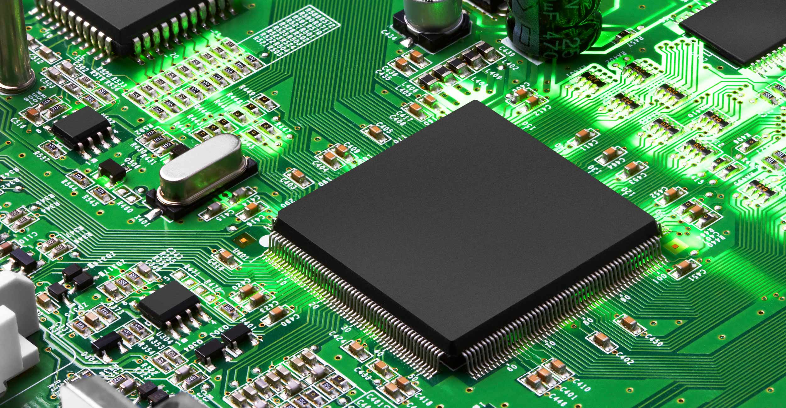

Корпорация Intel — крупнейший в мире производитель полупроводников, производственные мощности которого находятся в США, Европе и Азии. Компания была основана в 1968 году, когда ее создатели почувствовали, что недостаточно внимания уделяют инновациям.
Содержание
Предпосылки микропроцессорных технологий
История развития компании Intel
AMD и Intel: партнерство и конкуренция
История развития процессоров Intel: Intel Core
Корпоративная культура и кризисные решения
Гордон Мур получил PhD по химии и физике в Калифорнийском технологическом институте, Пасадена. После он устроился в лабораторию прикладной физики в университете Джона Хопкинса, но вскоре решил, что работа в частной отрасли имеет больший потенциал.
Его очень интересовали возможности транзисторов — на тот момент недавнего изобретения, у которого еще не было практического применения в промышленности. В 1956 году Мур вернулся в Калифорнию, чтобы работать в лаборатории Уильяма Шокли, одного из Нобелевских лауреатов и изобретателей транзисторов.
Роберт Нойс получил докторскую степень по физике твердого тела в Массачусетском технологическом институте. Его диссертация была связана с транзисторами. В 1956 году, еще будучи сотрудником Philco Corporation, он познакомился с Уильямом Шокли и начал работу в его лаборатории.
Шокли оказался плохим управленцем. Атмосфера тотального контроля негативно отражалась на результатах работы и моральном духе коллектива. В 1957 году восемь его сотрудников уволились, из-за чего получили прозвище «вероломная восьмерка», и создали новую компанию Fairchild Semiconductor Corporation как дочернее подразделение Fairchild Camera and Instrument Corporation.
В 1959 году Мур стал руководителем по исследованиям и разработкам. Генеральным директором был назначен Роберт Нойс.
В 1958 году Джин Херни, один из восьми основателей Fairchild Semiconductor Corporation, придумал поместить на транзисторы слой оксида кремния, чтобы защитить их от грязи, пыли и иных загрязнений. После этого стало возможным усовершенствовать устройство. Раньше Fairchild производила транзисторы на больших пластинах, вырезала компоненты и соединяла их проводами, а теперь можно было располагать их на единой пластине — так появилась интегральная схема.

Идея одновременно пришла в голову Роберту Нойсу и Джеку Килби из Texas Instruments Incorporated. Однако у Нойса было более масштабное видение: он разработал планарную технологию — метод производства микросхем, при котором металлические связи утоплены в пластину. Позже Нойс и Fairchild Semiconductor получили на нее патент.
Со временем Нойс и Мур сочли, что Fairchild Semiconductor уделяет разработкам недостаточно внимания. Они решили основать собственную компанию и обратились за помощью к венчурному капиталисту Артуру Року. В тот момент их бизнес-план занимал лишь одну страницу. Рок доверял Нойсу и Муру и предоставил $3 млн в качестве стартового капитала.
18 июля 1968 года основатели зарегистрировали компанию под названием N M Electronics, но вскоре изменили название на Intel (от англ. integrated electronics, «интегрированная электроника»). Перед тем как в 1971 году стать публичной компанией, Intel привлекла еще $2 млн инвестиций.
Нойс и Мур сформировали особую культуру управления, которая со временем распространилась в Кремниевой долине. Они отрицали иерархию и поддерживали творчество. Третьим по значимости в Intel стал Эндрю Гроув, который смог эффективно организовать работу и поддерживать дисциплину. Фактически благодаря ему работал закон Мура: число транзисторов, размещаемых на интегральной схеме, удваивалось регулярно — каждые 18 или 24 месяца. Тогда же Intel начала разрабатывать не только микросхемы, но и компоненты для компьютеров. С появлением линейки Pentium компания приступила к выпуску наборов микросхем и материнских плат. Позже десятки производителей начали создавать компьютеры на базе Pentium.
В середине 1990-х годов продажи ПК росли, и Intel продолжала разрабатывать все более мощные микропроцессоры. В 1995 году на рынке появился Pentium Pro с 5,5 млн транзисторов, способный выполнять до 300 млн операций в секунду.
Затем Intel добавила технологию мультимедийных расширений к линейке Pentium, что позволяло улучшать характеристики ПК. К 1996 году выручка компании достигла $20,85 млрд, а чистая прибыль выросла до $5,16 млрд.
В ноябре 1999 года корпорация Intel была включена в индекс Dow Jones Industrial Average.
В конце 1990-х годов Intel приобрела несколько компаний, которые обеспечили ей выход на рынок продуктов беспроводной связи, сетевых технологий и встроенных микросхем управления. Корпорация Intel также вышла на рынок e-commerce, создав крупнейшую в мире торговую площадку для предприятий. К середине 1999 года объем интернет-продаж составлял $1 млрд в месяц.
Однако компания не забывала и про свою основную специализацию. В 1999 году Intel провела крупнейший запуск, обнародовав одновременно 15 процессоров Pentium III и Pentium III Xeon.
Скромный бизнес-план Нойса и Мура заключался в масштабном производстве интегрированных полупроводниковых карт памяти. Тогда они были в десять раз дороже стандартных карт на магнитных сердечниках. Однако стоимость постепенно снижалась, и основатели Intel полагали, что их разработка скоро заменит устаревшие комплектующие.
В течение нескольких месяцев после запуска компания выпустила биполярную память 3101 Schottky, высокоскоростную микросхему оперативной памяти (RAM). Этот продукт стал довольно популярным, и Intel существовала благодаря его продажам до 1969 года, пока не представила металлооксидный полупроводниковый чип 1101.
В 1970 году Intel выпустила 1103, первую динамическую высокоскоростную микросхему DRAM объемом 1 Кбайт. Это был первый чип, который вмещал существенный объем информации. Вскоре чип 1103 заменил магнитные сердечники. В конечном итоге DRAM оказался незаменимым компонентом персонального компьютера.
Далеко не все бизнес-решения Intel были удачными. В 1972 году корпорация решила запустить производство цифровых часов и приобрела компанию Microma. Однако ей не хватало понимания рынка, и уже в 1978 году она продала актив с убытком в $15 млн.
1971 год стал революционным для компьютерной индустрии. В рамках контракта с японским производителем калькуляторов Nippon Calculating Machine Corporation Intel разработала первый в мире микропроцессор 4004. Работая над этим заказом, Хофф придумал план центрального процессора (ЦП) на одном кристалле.
Хотя изначально Intel рассматривала микропроцессоры как усовершенствование, которое позволит увеличить память компьютера, позже она оценила их потенциал.
В 1972 был представлен 8008, 8-разрядный микропроцессор, разработанный вместе с 4004, но ориентированный на обработку данных и символов, а не арифметических операций.
В 1974 году запущен первый микропроцессор общего назначения 8080. За $360 Intel продавала целый компьютер на одном чипе, в то время как другие ПК стоили тысячи долларов. Вскоре 8080 стал отраслевым стандартом, а Intel — лидером на рынке 8-битных систем. Intel приложила максимум усилий, чтобы сделать свою архитектуру стандартом рынка. Когда в 1980 году International Business Machines Corporation (IBM) стала устанавливать в свои компьютеры микропроцессор 8008, Intel, казалось, победила конкурентов.

В 1971 году Intel разработала еще один революционный продукт — стираемую программируемую постоянную память (СППЗУ). Физик Intel Дов Фроман работал над вопросом надежности кремниевого затвора, используемого в металлооксидных полупроводниковых чипах. Так он понял, что «плавающие» затворы можно использовать для создания нового поколения микросхем.
Обычные микросхемы ПЗУ приходилось постоянно программировать, поскольку любые изменения требовали изготовления новой микросхемы. Но теперь Intel смогла предложить клиентам микросхемы, которые можно стирать и перепрограммировать с помощью ультрафиолета и электричества. На момент запуска СППЗУ была просто новинкой, но микропроцессоры создали на нее спрос.
Другой важной разработкой Intel в то время стали микросхемы периферийных устройств, оптимизированные для решения конкретных задач. Они позволили значительно расширить возможности компьютера, не увеличивая затраты на разработку ПО. Одной из важнейших разработок в области периферийных устройств стал сопроцессор. Фактически он был расширением ЦП и позволял эффективнее обрабатывать ресурсоемкие задачи. Так, благодаря инновациям, компания Intel снова опередила своих конкурентов.
Для IBM было слишком рискованно иметь единственного поставщика чипов. Поэтому в 1976 году Intel и Advanced Micro Devices (AMD) заключили соглашение о перекрестном лицензировании, а в 1982 году приняли решение об обмене технологиями.
Однако уже в 1980-х Intel отказалась раскрывать сведения о новом процессоре 80386.
В 1991 году AMD подала антимонопольный иск на $2 млрд против Intel, заявив, что компания незаконно обеспечивала статус монополиста на рынке. В 1995 году компании сообщили, что достигли соглашения. AMD получила бессрочную лицензию на микрокод процессоров 80386 и 80486.
Позже Intel неоднократно получала претензии от Федеральной торговой комиссии США, Еврокомиссии, регуляторов Японии и Южной Кореи.
В 2006 году AMD подала жалобу на Intel в Федеральное управление картелей Германии, утверждая, что сделка между Intel и Media Markt препятствовала продажам компьютеров на базе процессоров AMD. В 2007 году Европейская комиссия обвинила Intel в нарушении антимонопольного законодательства. Ведомство постановило, что компания предлагала скидки производителям ПК, которые покупали большинство процессоров у Intel, платила за задержку или отмену продуктов на базе процессоров AMD и продавала свои процессоры ниже себестоимости на торгах, в которых участвовала вместе с AMD.
В 2009 году Intel и AMD урегулировали все антимонопольные и патентные споры. Intel согласилась выплатить AMD $1,25 млрд, согласившись при этом на ряд положений о деловой практике и пятилетнее соглашение о перекрестном лицензировании.
Стоит отметить, что победы в судебных разбирательствах не дали AMD серьезного преимущества: Intel активно разрабатывала новинки, и на момент передачи патентов технологии уже не являлись передовыми. В 1999 году AMD представила высокопроизводительный процессор Athlon, который должен был конкурировать с Pentium. В качестве ответа была запущена серия Core.
В 2006 году Intel выпустила процессор Core 2 Duo E6320 (4 МБ кэш-памяти, тактовая частота 1,86 ГГц, частота системной шины 1066 МГц). Core Duo имел два ядра и должен был составить конкуренцию процессорам AMD Athlon X2 и Opteron.
Перед этим компания существенно изменила позиционирование на рынке. Цены на Pentium и Pentium D были снижены, чтобы втянуть AMD в ценовую войну в 2005-2006 годах. Процессор Core 2 Duo помог Intel вновь обогнать AMD по производительности.
Стоит отметить, что цифры в названиях процессоров (i3, i5, i7 и так далее) не указывают на количество ядер, а на производительность. Компания регулярно выпускает новые поколения микропроцессоров: каждый цикл разработки занимает примерно год и решает одну из задач:
Стратегия «тик-так» была представлена в 2006 году, но спустя 10 лет была скорректирована: сейчас «тик» — процесс, а «так» — архитектура и оптимизация.
В 2008 году была выпущена усовершенствованная серия Nehalem на базе 45-нм. У этих процессоров было от одного до четырех ядер. Это был первый процессор Intel с технологией Turbo Boost, который мог работать на частоте 3,6 ГГц в течение коротких периодов времени. Благодаря улучшениям Nehalem смог работать в два раза быстрее, чем процессоры Core 2. Процессоры на базе Nehalem продавались под брендами Celeron, Pentium, Core i3, Core i5, Core i7 и Xeon.
Позже была создана версия матрицы Nehalem на 32-нм, которая получила название Westmere. Ее базовая архитектура не изменилась, но благодаря уменьшенному размеру внутри процессора удалось разместить дополнительные компоненты — вместо четырех ядер Westmere содержала до восьми.
Последующие поколения носили названия Sandy Bridge, Ivy Bridge, Haswell, Broadwell, Skylake, Kaby Lake, Coffee Lake и другие. Недавно вице-президент Intel Грегори Брайант сообщил о завершении разработки Meteor Lake на базе 7-нм техпроцесса. Эти процессоры будут выпущены в 2023 году.
Компания быстро росла: если в 1968 году штат насчитывал 12 сотрудников, в 1980 году он вырос до 15 тысяч. Это требовало внимательного подхода к корпоративной культуре.
Нойс, Мур и Гроув помнили, как их разочаровывала бюрократия в Fairchild, и пытались выработать более легкий стиль управления. На ранних этапах они поддерживали связь с сотрудниками на неформальных еженедельных обедах, но со временем это стало невозможно.
Поэтому основатели выработали собственную корпоративную политику.
В 1974 году во время рецессии Intel была вынуждена уволить 30% сотрудников. Это серьезно повлияло на моральный дух компании.
В 1981 году произошел очередной кризис. Однако вместо сокращений Intel ускорила разработку новых продуктов с помощью «125-процентного решения». Этот подход подразумевал, что в течение шести месяцев сотрудники с ненормированным рабочим днем сверхурочно работали по два часа без оплаты.
В 1982 году восстановление продаж было недолгим, и Intel решила опять обойтись без увольнений. Вместо этого заработная плата была сокращена на 10%, но уже к июню 1983 года была восстановлена.
Изначально продукция Intel была неизвестна конечному потребителю. Если в 1980-х годах компания была лидером рынка, то со временем она начала уступать конкурентам. В 1991 году она проиграла патентный спор AMD и поняла, что для сохранения позиций необходимо менять позиционирование.
В ходе исследования Intel выявила сегмент рынка, условно названный «те, кто добивается успеха». Компания решила представлять свои чипы как премиум-продукт, соответствующий запросам этой аудитории. Для этого она использовала свои сильные стороны — фонды, инновации, совместимость с продуктами разных производителей и возможность создавать процессоры как низкой, так и высокой ценовой категории.
Продукция Intel позиционировалась как «необходимый ингредиент», а рекламный лозунг звучал как Intel Inside. Раньше модели процессоров получали номер. Однако очередное поколение назвали Pentium — это было легче писать, произносить и запоминать. Подбренды имели собственные обозначения.
Со временем видение бренда трансформировалось. Сейчас маркетинговые кампании нацелены на миллениалов, которые важны не только как покупатели, но и как лица, которые в будущем будут принимать бизнес-решения.
Для привлечения новой аудитории Intel выступает в качестве партнера развлекательных мероприятий — Супербоула, премии «Грэмми», NBA и многих других.
В последние годы Intel столкнулась с рядом проблем: выпуск чипов последнего поколения был отложен, а Apple запустила собственное производство чипов.
В 2019 году Intel продала Apple бизнес по производству модемов для смартфонов, а годом позже сократила присутствие на рынке компьютерной памяти. По итогам 2020 года доля Intel на рынке микропроцессоров сократилась, тогда как основные конкуренты укрепляли позиции.
В начале 2021 года ушел в отставку Боб Свон, который занимал пост финансового директора Intel с 2016 года, а в 2019 году был назначен временным генеральным директором. Новым руководителем Intel назначен Пэт Гелсингер. Он уже представил новую стратегию Intel:
План поддержали Microsoft, Amazon, Cisco, Google, IBM и Qualcomm. Intel и ее основатели оказали огромное влияние на технологическую отрасль. Прогнозировать, в каком направлении она будет развиваться, непросто. Однако корпорация уже доказала, что умеет адаптироваться и видеть новые возможности. И этому у нее стоит поучиться.